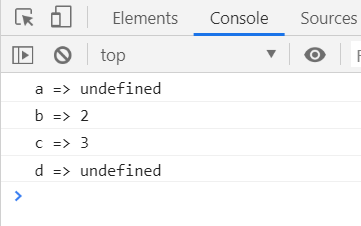

首先，void关键字是javascript当中非常重要的关键字，该操作符指定要计算或运行一个表达式，但是不返回值。
语法格式：
当点击超级链接时，什么都不发生
<!-- 1.当用户链接时，void(0)计算为0,用户点击不会发生任何效果 -->
<a href="javascript:void(0);">单击此处什么都不会发生</a><br>执行void操作符当中的代码
<!-- 2.执行 void() 操作符中的代码 -->
<a href="javascript:void(alert('还真点啊你，真听话！！！哈哈哈！！！'))">点我弹出警告框!!!</a><br>
<a href="javascript:void(console.log('还真点啊你，真听话！！！哈哈哈！！！'))">点我输出到控制台!!!</a><br>计算void操作符当中的算术
html:
<button type="button">点我</button>js:
<script type="text/javascript">
document.querySelector('button').addEventListener('click', function () {
var a, b, c, d;
a = void(b = 2, c = 3);
console.log('a => ' + a);
console.log('b => ' + b);
console.log('c => ' + c);
console.log('d => ' + d);
});
</script>控制台输出：

很显然，2赋值给了a, 3赋值给了b, a 和 d一样只是定义了没有赋值，所以为 undefined
如下面这个例子：
<a href="javascript:void(0);">你点吧，反正我就是不动，嘿嘿嘿！！！</a><br>
<a href="#destination">点我跳转</a>
<br><br><br><br><br><br><br><br><br><br><br><br><br><br><br><br><br><br><br><br><br><br><br><br><br>
<br><br><br><br><br><br><br><br><br><br><br><br><br><br><br><br><br><br><br><br><br><br><br><br><br>
<br><br><br><br><br><br><br><br><br><br><br><br><br><br><br><br><br><br><br><br><br><br><br><br><br>
<br><br><br><br><br><br><br><br><br><br><br><br><br><br><br><br><br><br><br><br><br><br><br><br><br>
<br><br><br><br><br><br><br><br><br><br><br><br><br><br><br><br><br><br><br><br><br><br><br><br><br>
<br><br><br><br><br><br><br><br><br><br><br><br><br><br><br><br><br><br><br><br><br><br><br><br><br>
<h2 id="destination">目的地</h2>